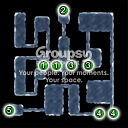
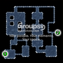

Frozen Cave

Frozen Cave B1F
Monster :
Mage Pururu /
Edge /
Grey Hound /
Death
Material : Large Pot / Treasure 4
Weather : Cold - HP ลดทีละ 1 หน่วยทุกๆ 3 วินาที
Attribute : Water
Warp
1 [ไปที่อีกฝั่งของตัวเลข]
2
Snop Snowfield
3 [ไปที่อีกฝั่งของตัวเลข]
4 [ไปที่อีกฝั่งของตัวเลข]
5 [ไปที่อีกฝั่งของตัวเลข]
6 Frozen CaveB2F

Frozen Cave B2F
Monster : Mage Pururu / Edge / Grey Hound / Death / Alcana Spade / Dumpty
Material : Mineral Lump / Large Pot / Treasure Box 4
Weather : Cold - HP ลดทีละ 1 หน่วยทุกๆ 3 วินาที
Attribute : Water
Warp
1 Frozen Cave B1F
2 Frozen Cave B3F
 Frozen Cave B3F
Monster
Frozen Cave B3F
Monster : Mage Pururu / Edge / Grey Hound / Death / Alcana Spade / Snow Crystal / Dumpty / Pikabu / Breaken Doll
Material : Mineral Lump / Large Pot / Treasure Box 4 / Container 1
Weather : Cold - HP ลดทีละ 1 หน่วยทุกๆ 3 วินาที
Attribute : Water
NPC
1 Yurika
Warp
1 [ไปที่อีกฝั่งของตัวเลข]
2 Frozen Cave B2F